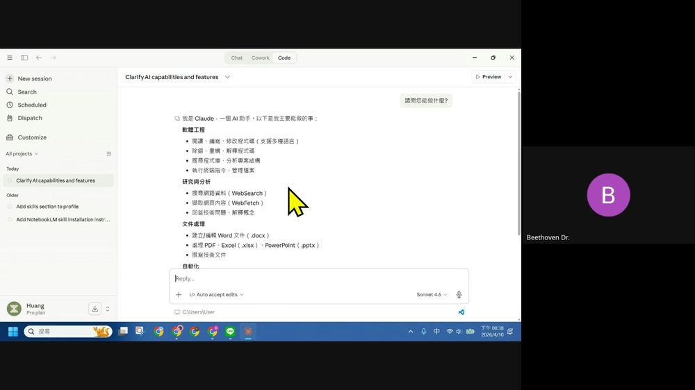
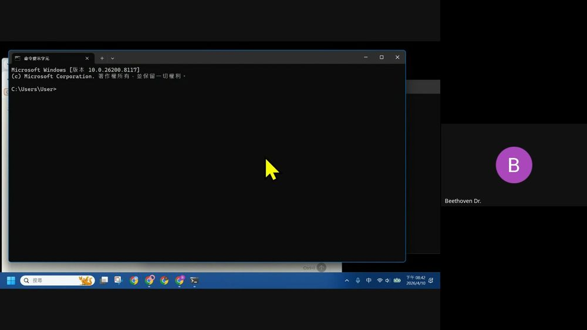
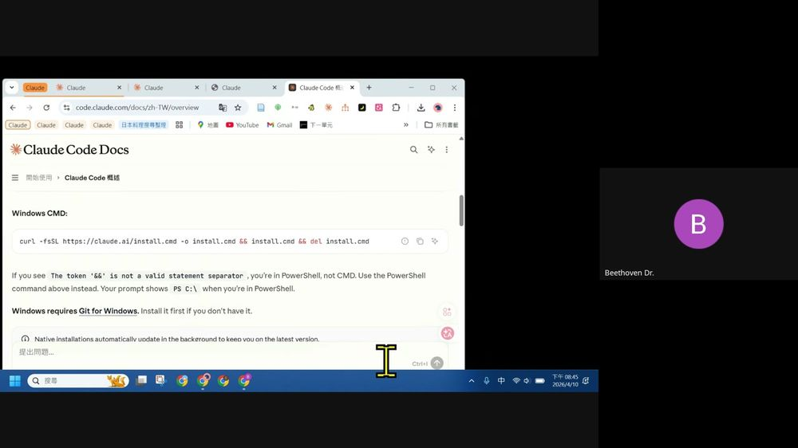
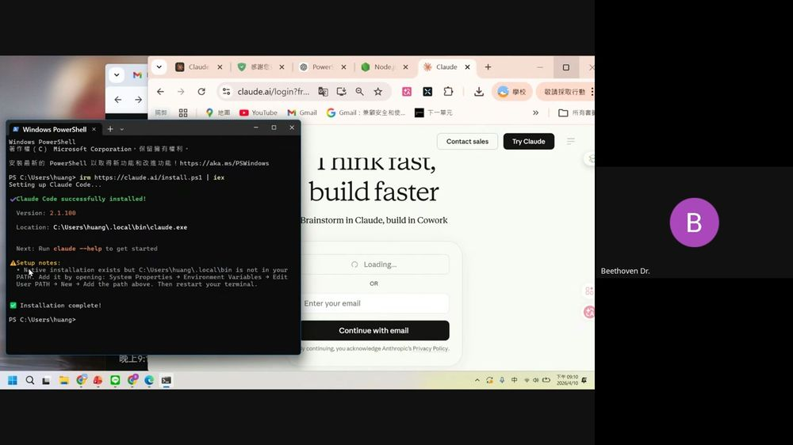
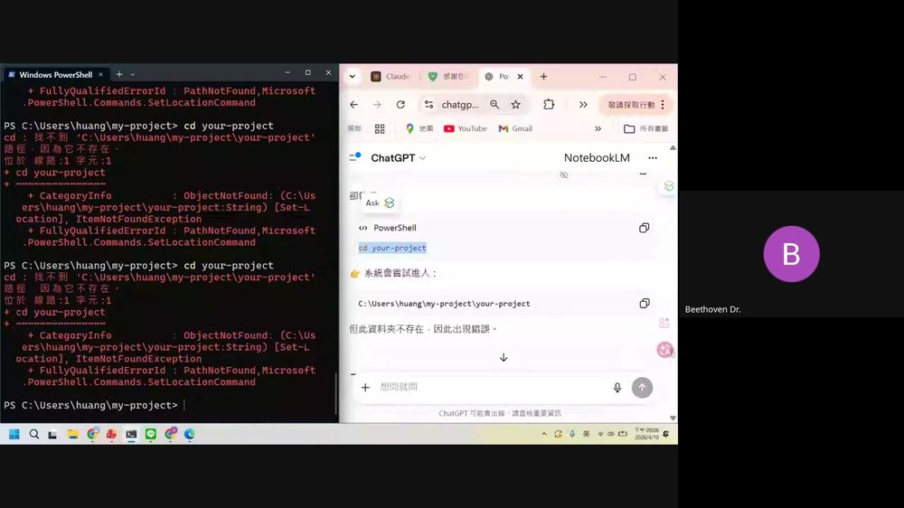
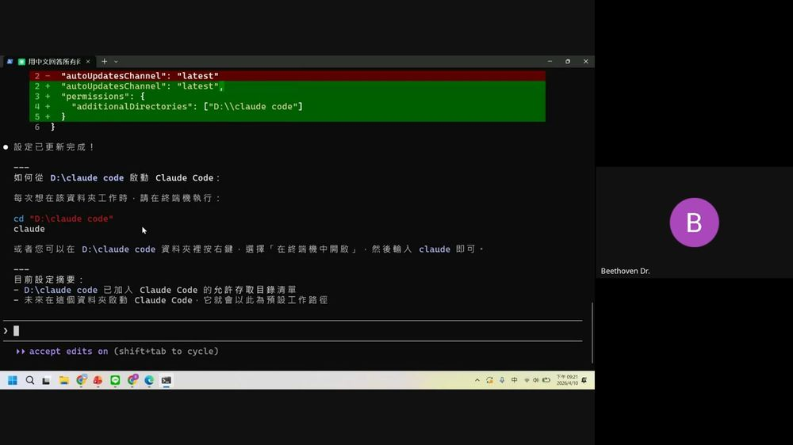
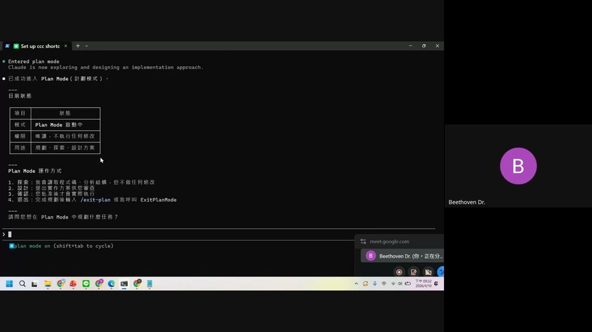
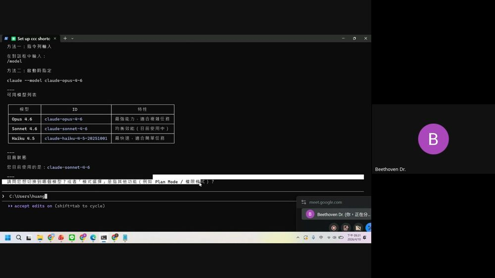

0. 課程資訊與教材
| 課程名稱 | EP32_「打通生成式 AI 任督二脈｜Claude Code 篇」 |
|---|---|
| 頻道 | 生成式 AI 應用電台・晨學講堂 |
| 直播日期 | 2026/04/10（五）20:30–21:30 CST；錄影全長約 68:24 |
| 教材 | 本集資料夾無簡報檔案、無課堂筆記檔，只有錄影本體一支。 |
| 一句話先懂 | 整堂課就是一場真實的「從零安裝到能用」實作直播：從 claude.ai 下載桌面版，到 Windows 終端機安裝 Claude Code（中間真的卡關、真的排錯），再到設定專屬工作資料夾、做快速啟動捷徑，最後示範切模型與 Plan Mode。 |
| 現場人數 | Google Meet 開場約 151 人在線，全程緩降到收尾約 134 人。 |
🎬 錄影回放（可直接播放）
⚠️ 誠實聲明（請務必先讀）：本集 Drive 資料夾沒有簡報檔、沒有現成課堂筆記。本頁全部內容依錄影每 20 秒抽 1 幀、共 205 張畫面逐幀親眼判讀而來，畫面中出現的指令、錯誤訊息、選單文字均直接照畫面抄錄；沒有畫面可對照的地方，本頁不會用「對 Claude Code 的一般知識」去湊內容。
1. 一頁看懂全課程
這堂課沒有投影片脈絡可循，動線完全由「老師實際操作螢幕的順序」決定。逐幀判讀後可歸納成四段：①認識桌面版三分頁 ②Windows 終端機安裝實戰（含真實踩雷）③邊查邊做設定專案資料夾 ④上手操作（模型／計劃模式／網路搜尋）。
本集沒有一句「金句投影片」——它的價值在於「真的卡住、真的修好」的完整過程。
—— 逐幀判讀整體觀察，非引用簡報
2. 逐幀時間軸（68 分鐘全程）
每一列都是親眼逐幀判讀的實錄（每 20 秒 1 張，共 205 張）；點各章節看該段詳細筆記與截圖。
| 時間 | 畫面／工具 | 發生了什麼 |
|---|---|---|
| 00:00 | Google Meet | 直播開場，畫面出現螢幕分享自身造成的「畫中畫」多層縮小效果；標題列可見完整場次名稱。 |
| 01:00 | claude.ai/new | 網頁版 Claude 首頁「Good evening, Huang」，模型顯示 Sonnet 4.6，下方 Write／Learn／Code／Life stuff／From Drive 五個快捷入口。 |
| 01:40 | claude.ai/downloads | 下載頁三步驟：Open（執行 Claude Setup.exe）→ Launch（自動安裝）→ Chat（工作列開啟）；下方還有 Mobile（iOS／Android）與 Chrome 擴充功能。 |
| 04:00 | Google 登入 | 桌面版彈出「Sign in」視窗，用 Continue with Google 登入；隨後「Let's knock something off your list」歡迎畫面。 |
| 07:40 | 桌面版 Code 分頁 | 切到 Code 分頁，開新 session「Clarify AI capabilities and features」，輸入「請問您能做什麼？」，Claude 條列自身能力（軟體工程／研究與分析／文件處理／自動化）。 |
| 09:20 | Google 搜尋 | 搜尋「claude code」，點進 Claude Code Docs 官方文件頁（code.claude.com/docs/zh-TW/overview）。 |
| 10:00 | Windows 搜尋 | 用 Windows 搜尋「cmd」開啟命令提示字元，準備貼上官方安裝指令。 |
| 10:40 | CMD | 貼上並執行：curl -fsSL https://claude.ai/install.cmd -o install.cmd && install.cmd && del install.cmd。 |
| 14:20 | Claude Code Docs | 文件頁提示：若看到「The token '&&' is not a valid statement separator」代表你在 PowerShell 不是 CMD，要改用 PowerShell 版指令；並提醒 Windows requires Git for Windows。 |
| 21:20–26:00 | （螢幕分享暫停） | 畫面僅剩參與者頭像，老師暫停分享螢幕排除安裝問題（約 4–5 分鐘離線排錯）。 |
| 26:20 | PowerShell | 改用 irm https://claude.ai/install.ps1 | iex；出現 git-bash 需求提示（橘字警告），但最終顯示「✅ Installation complete!」。 |
| 31:20 | Git for Windows | 另開瀏覽器下載 Git for Windows 安裝檔並跑安裝精靈（Install 進度條）。 |
| 33:00 | ChatGPT | 另開 chatgpt.com，請它生成「Node.js 專案設定」步驟指南（一、二、三、四步）搭配 PowerShell 視窗同步操作。 |
| 33:20–36:00 | PowerShell + ChatGPT | 依指南 mkdir my-project → cd my-project；照抄指南文字時誤把佔位字「your-project」原樣貼上，出現「路徑不存在」的真實新手錯誤示範。 |
| 36:20 | npm 指令 | npm init -y 出現「npm 無法辨識」——因為 Node.js 還沒裝；ChatGPT 建議先確認 Node 環境。 |
| 37:40 | Node.js 安裝 | 下載並執行 Node.js 安裝精靈（Installing Node.js 進度條）。 |
| 39:00 | Claude Code on the Web | 瀏覽器同時開著「Claude Code on the Web」頁籤，作為對照參考。 |
| 44:20 | PowerShell | 再次執行 irm https://claude.ai/install.ps1 | iex，這次顯示「Claude Code successfully installed! Version 2.1.100」，並提示 .local\bin 不在 PATH，需手動加入環境變數。 |
| 45:00 | 登入流程 | 瀏覽器彈出 claude.ai/login「Think fast, build faster」頁面，Enter email／Continue with email。 |
| 46:20 | Claude Code 終端機 | ASCII 貓咪圖示，「Welcome to Claude Code v2.1.100」，Logged in as 107256503@g.nccu.edu.tw，Login successful。 |
| 49:00 | 環境變數設定 | Windows 搜尋「環境變數」→ 開啟「編輯系統環境變數」視窗，把 Claude 安裝路徑加入 PATH。 |
| 51:20 | Google 重新登入 | 瀏覽器彈出「您即將重新登入『Claude』」授權確認畫面（沿用 nccu.edu.tw 帳號）。 |
| 57:00 | Claude Code 終端機 | Welcome back 畫面：Sonnet 4.6・Claude Pro・107256503@g.nccu.edu.tw's Organization・C:\Users\huang；提示「Run /init to create a CLAUDE.md file」。 |
| 57:40 | Claude Code 對話 | 使用者輸入「請一律用中文回答」→ Claude 確認改用中文；接著提出「我想要把我的資料另外新增在外頭新的資料夾，不要放在系統檔的路徑」。 |
| 59:00 | Skill 執行 | Claude 呼叫內建 Skill(update-config)，說明它會透過 settings.json 設定 harness 行為，經使用者核准後執行。 |
| 60:00 | settings.json diff | 顯示綠色新增內容："permissions": { "additionalDirectories": ["D:\\claude code"] }，並附上如何從新路徑啟動 Claude Code 的操作說明。 |
| 61:20 | 建立捷徑別名 | 先示範 PowerShell profile 函式 CCC、cmd.exe 批次檔 CCC.bat，之後又針對 bash 環境示範 alias ccc='claude' 寫入 ~/.bashrc。 |
| 63:20 | 測試別名 | 新開 PowerShell 視窗輸入 ccc 測試捷徑是否生效。 |
| 64:00 | 檔案總管 | 開啟 C:\Users\huang 資料夾，展示 .claude、.config、.local、my-project 等實際存在的資料夾結構。 |
| 65:40 | WebSearch 示範 | 對 Claude Code 提問，它自動執行 Web Search("Gemini Notebooks 最新消息 2026") 等兩次搜尋，整理出功能表格。 |
| 69:20（累計） | /model 指令 | 示範切換模型：對話框輸入 /model 或啟動時加 --model claude-opus-4-6；列出 Opus 4.6／Sonnet 4.6／Haiku 4.5 三種模型的 ID 與特性。 |
| 61:40 | Plan Mode | 進入 Plan Mode（計劃模式）：唯讀、不執行修改，只探索、設計方案、待確認後才實際執行，退出用 /exit-plan。 |
| 63:20 | Google Meet 聊天 | 螢幕縮回會議畫面，聊天室出現學員提問「請問老師的課程會有小幫手嗎？」，老師互動收尾，直播於約 68:24 結束。 |
💡 時間戳為抽格畫面對應的錄影時間（每 20 秒一格），部分文字說明畫面因視窗切換頻繁，實際對話發生時間可能與抽格時間相差數秒至一分鐘內，僅供對照參考。
3. Claude 桌面版：三分頁與能力清單
課程一開始，老師先從瀏覽器 claude.ai 帶大家「認人」，再引導下載桌面版、登入、切換到 Code 分頁，直接問 Claude「你能做什麼」，把回答整段記錄下來當作能力地圖。
3.1 claude.ai 網頁版起手
- 網頁版首頁「Good evening, Huang」，輸入框下方模型顯示 Sonnet 4.6。
- 五個快捷入口：Write／Learn／Code／Life stuff／From Drive。
- 接著切到 claude.ai/downloads 頁面，三步驟安裝桌面版：Open（執行 Claude Setup.exe，6.6 MB）→ Launch（安裝進度條）→ Chat（安裝完成後從工作列開啟）。下方另有 Mobile（iOS／Android 下載）與 Chrome 擴充功能（可在瀏覽器中操作點擊、填表單）。
3.2 Chat／Cowork／Code 三分頁，親自問它「你能做什麼」

| 能力分類 | 畫面上實際列出的項目 |
|---|---|
| 軟體工程 | 閱讀、編寫、修改程式碼（支援多種語言）；除錯、重構、解釋程式碼；搜尋程式庫、分析專案結構；執行終端指令、管理檔案 |
| 研究與分析 | 搜尋網路資料（WebSearch）；擷取網頁內容（WebFetch）；回答技術問題、解釋概念 |
| 文件處理 | 建立／編輯 Word 文件（.docx）；處理 PDF、Excel（.xlsx）、PowerPoint（.pptx）；撰寫技術文件 |
| 自動化 | 設定排程任務（Cron Jobs） |
💡 這段「問 Claude 你能做什麼」不是官方簡報內容，而是老師現場直接對 Code 分頁提問、把 Claude 自己回覆的能力清單當教材——逐字照畫面抄錄，四大分類、共 10 項小項全部真實存在於畫面中。
⚠️ Chat／Cowork／Code 三分頁本身的功能差異，本集沒有明確講解或比較表，老師直接切到 Code 分頁操作；若日後官方文件有更清楚說明，可再補充對照。
4. Windows 安裝實戰（含真實踩雷）
這是全集份量最重的一段：從 Google 搜尋「claude code」找到官方文件，到終端機一路貼指令、真的卡關、真的排錯，最後成功安裝並登入——過程完整保留，包含好幾個新手會遇到的真實錯誤。
4.1 CMD 安裝指令

curl -fsSL https://claude.ai/install.cmd -o install.cmd && install.cmd && del install.cmd
官方文件同時列出 Windows PowerShell 版指令在同一頁，老師先示範 CMD 版本。
4.2 CMD vs PowerShell：真的踩到的雷

- 老師一開始在 PowerShell 視窗裡貼了 CMD 版指令（含
&&），跳出「The token '&&' is not a valid statement separator」錯誤——這正是文件提醒的典型誤用。 - 畫面中約 21:20–26:00 這段螢幕分享一度暫停（只剩參與者頭像），是老師離開畫面排除問題的真實空檔，之後回來已改用 PowerShell 版指令。
- PowerShell 版指令：
irm https://claude.ai/install.ps1 | iex；執行後除了安裝訊息，還跳出橘字警告，提示 Windows 上使用 Claude Code 需要 git-bash（若已安裝但不在 PATH，需另外設定環境變數CLAUDE_CODE_GIT_BASH_PATH）。 - 老師接著另開瀏覽器下載 Git for Windows 安裝檔並跑完安裝精靈。
畫面實際出現的兩種安裝指令：
CMD：
curl -fsSL https://claude.ai/install.cmd -o install.cmd && install.cmd && del install.cmd
PowerShell：
irm https://claude.ai/install.ps1 | iex
4.3 安裝成功與 PATH 環境變數提醒

- 用 Windows 搜尋「環境變數」，開啟「編輯系統環境變數」控制台項目。
- 在使用者 PATH 中新增一條，指向
C:\Users\huang\.local\bin。 - 關閉並重新開啟終端機，讓新的 PATH 生效。
⚠️ 這一步是本集第二個真實新手雷點：安裝成功≠指令能直接用，Windows 上常需要手動把安裝路徑加進 PATH 環境變數，重開終端機才會生效。
4.4 登入與歡迎畫面
- 瀏覽器彈出 claude.ai/login「Think fast, build faster / Brainstorm in Claude, build in Cowork」頁面，選擇 Enter your email 或 Continue with email。
- 終端機出現 ASCII 貓咪圖示，橘字「Welcome to Claude Code v2.1.100」，接著顯示「Logged in as 107256503@g.nccu.edu.tw」「Login successful. Press Enter t...」。
- 瀏覽器同時顯示 platform.claude.com「Build something great — You're all set up for Claude Code. You can now close this window.」
- 重新開一個 session 後看到「Welcome back Huang!」歡迎卡：Sonnet 4.6・Claude Pro・107256503@g.nccu.edu.tw's Organization・C:\Users\huang；右側 Tips 提示「Run /init to create a CLAUDE.md file with instructions for Claude the next time you use it in your home directory.」
「Note: You have launched claude in your home directory.」
—— 終端機提示文字，畫面判讀原文，提醒使用者目前是在整台電腦的家目錄下啟動，不是專案資料夾
5. 邊查邊做：ChatGPT／NotebookLM 陪你設定專案
安裝過程中，老師另開 ChatGPT（搭配 NotebookLM 分頁）即時生成「怎麼建立 Node.js 專案資料夾」的步驟指南，一邊照著唸、一邊在 PowerShell 貼指令——過程中真的出現了新手會犯的錯誤，而且沒有被剪掉。
5.1 請 ChatGPT 生成步驟指南
- 開啟 chatgpt.com，畫面顯示「你正在做什麼？」提問框，老師請它針對「還沒有專案資料夾」的情況給步驟。
- ChatGPT 產出的指南結構分四段：一、建立 Node.js 專案（必要）／二、進入專案資料夾／三、初始化 Claude Code／四、安裝完成後（驗證），每段都附可直接複製貼上的 PowerShell 指令方塊。
- 視窗右側同時開著 NotebookLM 分頁，可能用來交叉核對或補充資料（畫面上可見分頁但操作內容未展開）。
5.2 新手常見錯誤示範（真實發生，未剪掉）

cd your-project 都出現「cd：找不到 'C:\Users\huang\my-project\your-project'，路徑：因為它不存在。」——原因是把指南裡的佔位字「your-project」直接當成真實指令複製貼上，而非替換成自己剛建立的資料夾名稱 my-project。✅ 這段沒有被剪掉，反而是很好的教材：照抄範例文字時要注意「佔位字」跟「實際名稱」的差別——這正是很多初學者第一次用命令列會卡住的地方。
5.3 補裝 Node.js
- 接續嘗試
npm init -y，PowerShell 回覆「npm：無法辨識 'npm' 詞彙是否為 Cmdlet、函數...」——因為當下電腦還沒有安裝 Node.js。 - ChatGPT 指南同步建議「我可協助你確認：Node 環境是否正常」，並列出建議指令
npm init -y／npm install @anthropic-ai/sdk／dir。 - 老師接著下載並執行 Node.js 安裝精靈（Installing Node.js 進度條畫面），裝完後才能繼續後續的 npm 指令。
「請執行並回傳結果：npm init -y / npm install @anthropic-ai/sdk / dir」
畫面判讀 · ChatGPT 生成指南「六、建議下一步（請直接做）」段落原文
6. 用自然語言改設定：settings.json 與內建 Skill
裝好、登入後，老師沒有直接手改設定檔，而是直接跟 Claude Code 用中文說需求，讓它自己找到對應設定、跑內建 Skill、改 settings.json，全程可見核准流程。
6.1 換工作資料夾（additionalDirectories）

2 - "autoUpdatesChannel": "latest"
2 + "autoUpdatesChannel": "latest",
3 + "permissions": {
4 + "additionalDirectories": ["D:\\\\claude code"]
5 + }
下方接著顯示「設定已更新完成！」與「如何從 D:\claude code 啟動 Claude Code」操作說明。
1️⃣ 使用者輸入「請一律用中文回答」→ Claude 確認改用中文回覆
2️⃣ 使用者說「我想要把我的資料另外新增在外頭新的資料夾，不要放在系統檔的路徑」
3️⃣ Claude 反問要建在哪個位置（給了 Documents 下、D:\ 等選項）
4️⃣ 使用者指定 D:\ 下建立「claude code」資料夾
5️⃣ Claude 呼叫內建 Skill(update-config)，跳出核准選單：
「1. Yes 2. Yes, and don't ask again for update-config in C:\Users\huang 3. No」
💡 Skill(update-config) 是 Claude Code 內建技能，畫面上顯示它的完整說明：「Use this skill to configure the Claude Code harness via settings.json. Automated behaviors (\"from now on when X\"...) require hooks configured in settings.json — the harness executes these, not Claude...」代表它是官方預先寫好、專門用來安全地改設定檔的技能，而不是 Claude 隨意亂改檔案。
⚠️ 過程中曾出現一次失敗：Claude 嘗試
Bash(mkdir -p "/d/claude code") 建資料夾，但回傳「Error: Exit code 127 /usr/bin/bash: line 1: mkdir: command not found」——這是 Windows 上 bash／git-bash 環境路徑對應的另一個真實踩雷，最後改用其他方式（PowerShell／Claude 內部工具）完成建立。6.2 CCC 快速啟動別名

| 環境 | 作法（畫面原文照抄） |
|---|---|
| PowerShell | New-Item -ItemType Directory -Force -Path "$HOME\Documents\PowerShell" | Out-NullAdd-Content -Path "$HOME\Documents\PowerShell\Microsoft.PowerShell_profile.ps1" -Value 'function CCC { cd "D:\claude code"; claude }'執行後關閉並重新開啟 PowerShell，之後輸入 CCC 即可啟動。 |
| cmd | echo @echo off > C:\Windows\CCC.batecho cd /d "D:\claude code" >> C:\Windows\CCC.batecho claude >> C:\Windows\CCC.bat |
| bash（Git Bash 等） | 寫入 ~/.bashrc：alias ccc='claude'，執行 source ~/.bashrc 生效；若使用 Git Bash 可能需另外確認 ~/.bashrc 會自動載入，否則加進 ~/.bash_profile。 |
- 老師接著開新終端機視窗，實際輸入 ccc 測試別名是否生效。
- 另外開啟檔案總管確認
C:\Users\huang底下真的有.claude、.config、.local、my-project等資料夾，證明設定確實落地。
用自然語言告訴 Claude Code「我想要 XX」，它會自己找到對應設定機制去改，而不是要你自己去翻文件改 JSON。
—— 本段實錄整體示範的核心觀念
7. 上手操作：模型、計劃模式與網路搜尋
環境都設定好之後，最後一段示範三個實際會用到的操作：切換模型、進入計劃模式、還有一次即時網路搜尋的示範。
7.1 /model 切換模型

| 模型 | 模型 ID | 特性（畫面原文） |
|---|---|---|
| Opus 4.6 | claude-opus-4-6 | 最強能力，適合複雜任務 |
| Sonnet 4.6 | claude-sonnet-4-6 | 均衡效能（目前使用中） |
| Haiku 4.5 | claude-haiku-4-5-20251001 | 最快速，適合簡單任務 |
- 方法一：指令列輸入——在對話框中輸入
/model - 方法二：啟動時指定——
claude --model claude-opus-4-6
💡 畫面上 Claude 主動追問：「請問您想切換到哪個模型？或者『模式選擇』是指其他功能（例如 Plan Mode／權限模式）？」——順勢帶出下一段的 Plan Mode 示範。
7.2 Plan Mode 計劃模式
| 項目 | 狀態（畫面原文） |
|---|---|
| 模式 | Plan Mode 啟動中 |
| 權限 | 唯讀，不執行任何修改 |
| 用途 | 規劃、探索、設計方案 |
- 探索：我會讀取程式碼、分析結構，但不做任何修改
- 設計：提出實作方案供您審查
- 確認：您批准後才會實際執行
- 退出：完成規劃後輸入
/exit-plan或我呼叫ExitPlanMode
⚠️ 畫面上使用者接著被問「您想調整哪種權限設定？」，回答「自動核准模式」，代表 Plan Mode 之外還有獨立的權限核准機制可以調整（例如每一步都要問 vs 自動核准）；但本集對此機制沒有再展開細講。
7.3 即時網路搜尋示範
- 畫面顯示 Claude Code 自動執行 Web Search("Gemini Notebooks 最新消息 2026") 與 Web Search("Google Gemini Notebooks new features 2026") 兩次搜尋。
- 搜尋完成後整理成表格回覆，包含「Gemini Notebooks 最新消息彙整（2026 年 4 月）」的重點摘要與核心功能表（聊天整理、自訂指令、檔案附加、雙向同步、跨功能使用）。
- 這段示範了 Claude Code 除了寫程式、改設定，也能直接當研究助理即時查資料——呼應第 3 章能力清單裡「搜尋網路資料（WebSearch）」那一項，是真的被示範出來的能力，不是條列文字而已。
直播尾聲聊天室出現提問：「請問老師的課程會有小幫手嗎？」
畫面判讀 · Google Meet 聊天室原文，直播於約 68:24 結束
8. 專有名詞卡
| 名詞 | 白話 | 正式定義／畫面依據 |
|---|---|---|
| Chat／Cowork／Code | 桌面版三分頁 | Claude 桌面應用程式頂部三個分頁，本集主要操作 Code 分頁 |
| CMD／PowerShell | 兩種 Windows 終端機 | 語法不同（&& 只在 CMD 有效），官方文件分別提供對應安裝指令 |
| Git for Windows／git-bash | Windows 上跑 bash 的工具 | Claude Code 在 Windows 上需要它才能完整運作，若不在 PATH 需設定 CLAUDE_CODE_GIT_BASH_PATH |
| PATH 環境變數 | 電腦去哪裡找指令的路徑清單 | 安裝完成不代表指令能直接執行，常需手動把安裝路徑加入 PATH 並重開終端機 |
| settings.json | Claude Code 的設定檔 | 存放權限、允許存取目錄（additionalDirectories）等設定，可由 Claude 透過 Skill 自動編輯 |
| Skill（技能） | Claude Code 內建的專門工具 | 本集示範 update-config，專門用來安全地改動 settings.json／settings.local.json |
| additionalDirectories | 額外允許存取的資料夾 | settings.json 中 permissions 底下的欄位，讓 Claude Code 能在指定目錄外的資料夾工作 |
| CCC 別名 | 快速啟動捷徑 | 本集自訂的別名／函式名稱，讓使用者打幾個字就能 cd 到專案資料夾並啟動 claude |
| /model | 切換模型指令 | 對話框輸入 /model 或啟動時加 --model 參數，可在 Opus 4.6／Sonnet 4.6／Haiku 4.5 間切換 |
| Plan Mode（計劃模式） | 先想清楚再動手 | 唯讀狀態，只探索與設計方案，需使用者確認才會真正執行修改 |
| /init | 建立 CLAUDE.md | 終端機提示可用此指令在家目錄建立含操作指示的 CLAUDE.md 檔案（本集僅畫面提示，未展開示範） |
| WebSearch | 即時上網查資料 | Claude Code 的內建工具之一，本集實際示範對 Gemini Notebooks 主題做兩次搜尋並整理結果 |
9. 課後自我檢核（照本集實作）
都對應本集畫面真的出現過的操作與訊息。可到互動技能地圖逐項打勾。
| 主題 | 你應該做得到… |
|---|---|
| 💻 桌面版 | ① 從 claude.ai/downloads 完成三步驟安裝 ② 知道 Chat／Cowork／Code 三分頁位置 ③ 能直接問 Claude「你能做什麼」取得能力清單 |
| ⌨️ 終端機安裝 | ① 分清 CMD 與 PowerShell 安裝指令不能混用 ② 看到 && 錯誤知道自己在哪個終端機 ③ 知道 Windows 需要 Git for Windows／git-bash ④ 安裝完成後會檢查並手動修 PATH |
| 🛠️ 專案設定 | ① 會用 mkdir／cd 建立並進入專案資料夾（不會誤用佔位字） ② 知道 npm 指令要先裝好 Node.js ③ 能用中文直接跟 Claude Code 說「我要把資料夾換到哪裡」讓它自己改設定 |
| 🚀 上手操作 | ① 會用 /model 切換 Opus／Sonnet／Haiku ② 知道 Plan Mode 是唯讀規劃、確認後才執行 ③ 知道 Claude Code 能做即時網路搜尋（WebSearch） |
10. 資料來源與製作說明
- 原始教材：本集 Drive 資料夾內只有一支課堂錄影（fileId 1D5_5J7Xtjbs4CbUwydNC6UOZHhaDtwH3，約 755MB，長度約 68:24），沒有簡報檔，也沒有既有的課堂筆記檔。
- 逐幀製作方式：下載完整錄影 → 用 ffmpeg 以每 20 秒 1 張的頻率抽出畫面，共 205 張 → 先合併成 11 張縮圖總覽表快速掃過全片，再對關鍵時間點的原始畫面逐張放大親眼判讀（終端機文字、瀏覽器網址列、錯誤訊息、選單文字等）→ 挑選 10 張最具代表性的畫面裁切、縮圖後嵌入本頁。文字說明中所有指令、錯誤訊息、設定內容均依畫面實際顯示逐字照抄，非憑通用知識重述。
- 誠實聲明：本頁完全依錄影實際發生的順序與畫面內容為準，包含中間確實發生的安裝錯誤、路徑打錯、npm 指令找不到等真實踩雷過程——這些沒有被隱藏或美化，因為它們正是這堂「從零安裝到能用」直播課最真實的教學價值所在。部分畫面因視窗切換快、字體小或被其他視窗遮擋，少數細節（例如逐字對話全文、部分選單被截斷的文字）可能因抽格解析度限制無法 100% 還原，已在對應段落標註「畫面判讀」以示區別於逐字稿引用。
- 版本號提醒：畫面中出現的 Claude Code 版本（v2.1.100）與模型代號（claude-opus-4-6、claude-sonnet-4-6、claude-haiku-4-5-20251001）為該場直播當下畫面顯示的實際版本，Anthropic 後續更新版本或模型代號可能已不同，實作請以你當下畫面顯示為準。
- 介面參考：互動技能地圖頁沿用本站 EP44–EP46 的卡片式多層導覽與遊戲化進度設計。